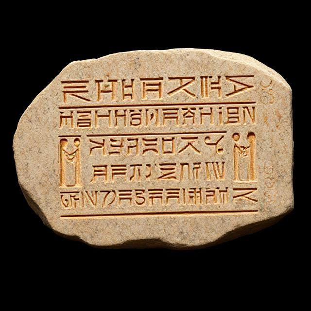
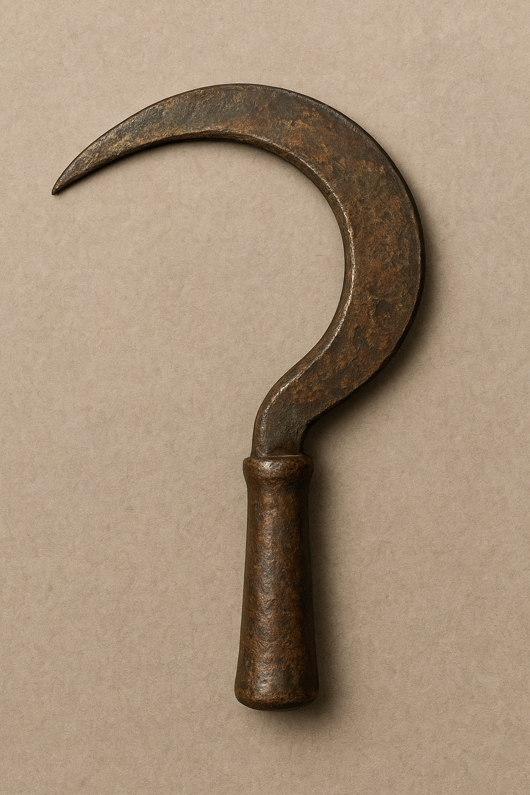
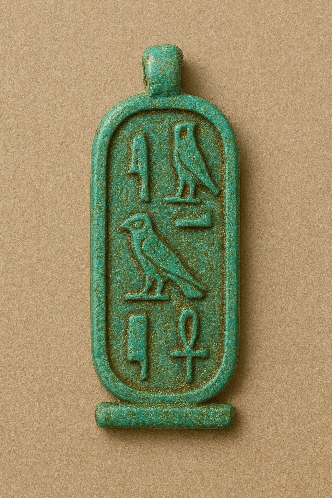
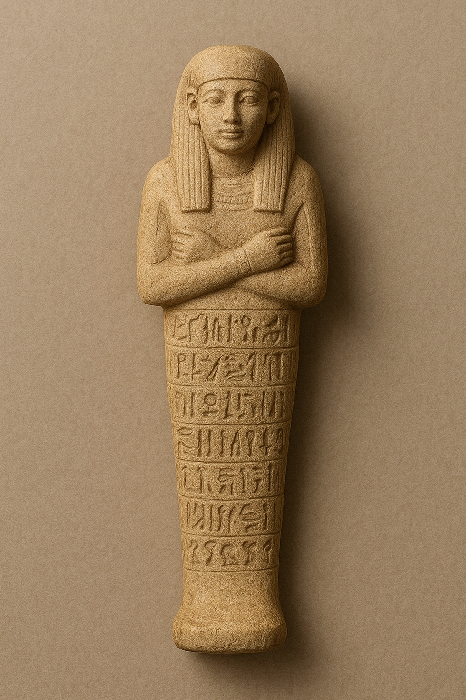
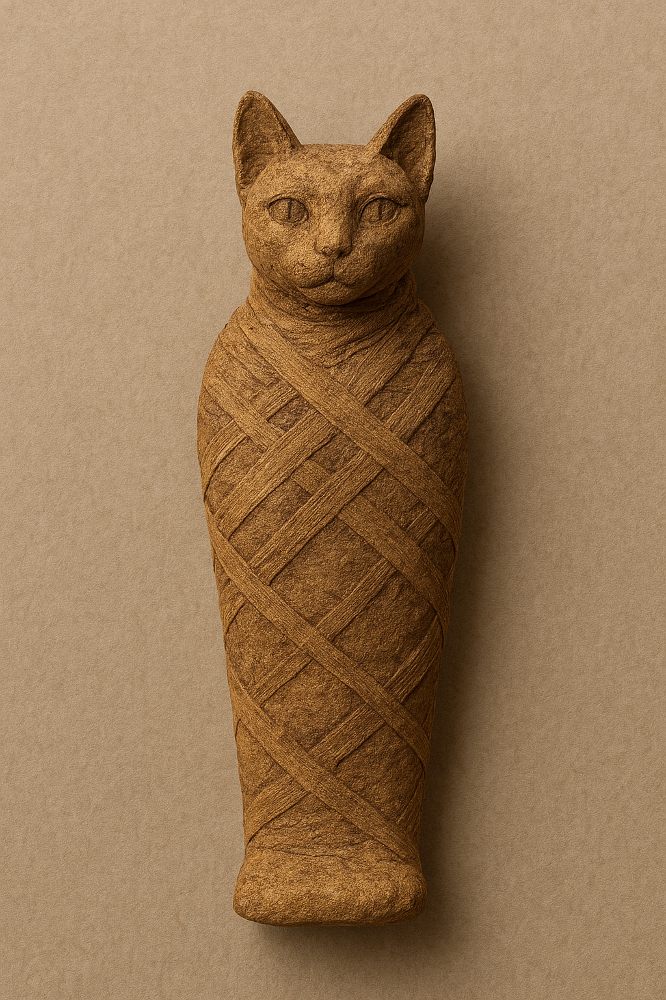
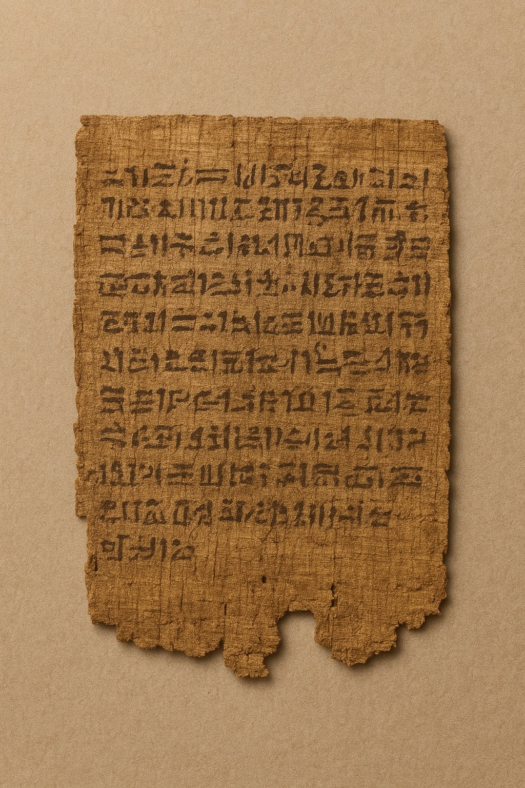

Name: Limestone Ostracon with Hieratic Text
Material: Fragment of limestone (sherd)
Size/Weight/Shape: Irregular flat piece, approx. 15×10×2 cm. Weight approx. 400g.
Estimated Age: New Kingdom, Ramesside Period (c. 1292–1070 BCE)
Preservation State: Complete fragment, well-preserved hieratic ink inscription, some fading.
Location Found: Deir el-Medina, Theban Necropolis, workman's village.
Likely Purpose: Practice writing, temporary record-keeping, or simple communication/notes.
Evidence of Use: Faint grid lines on the surface; clear, dark ink writing (hieratic script).
Manufacture Clues: Roughly chipped into a manageable size; written with a reed brush and black carbon ink.
Found With: Several other plain and inscribed ostraca, pottery sherds, and small discarded tools.
Burial or Habitat Context: Discarded in a domestic refuse pit (midden) outside a residential dwelling.
Symbolism: None inherent, but represents the literacy of the working class and daily life.
Comparison: Resembles thousands of administrative and literary ostraca from the New Kingdom found at Thebes.
Name: Bronze Sickle Blade (Agricultural Tool)
Material: Copper-tin alloy (Bronze)
Size/Weight/Shape: Crescent-shaped blade, approx. 25 cm long, 5 cm wide. Weight approx. 150g.
Estimated Age: Middle Kingdom (c. 2055–1650 BCE)
Preservation State: Partial, heavily corroded and patinated, missing wooden handle/hafting material.
Location Found: Found in a small granary structure at an un-named settlement site in the Faiyum region.
Likely Purpose: Harvesting grain (e.g., barley, emmer wheat).
Evidence of Use: Sharp cutting edge shows significant wear marks and microscopic striations from repeated cutting.
Manufacture Clues: Cast in a mold; rivet holes visible where it was originally hafted to a wooden handle.
Found With: Found lying on a packed earth floor adjacent to a pottery storage jar and carbonized grain.
Burial or Habitat Context: Found within the remains of a small, mud-brick storage building in an agricultural settlement.
Symbolism: Represents agricultural labor and the bounty of the Nile flood, essential to Egyptian life.
Comparison: Similar to bronze sickle blades found in other Middle Kingdom agricultural contexts across Egypt.
Name: Lapis Lazuli Cartouche Amulet of Thutmose III
Material: Lapis Lazuli (deep blue metamorphic rock), gold wire.
Size/Weight/Shape: Cartouche-shaped, approx. 3 cm long, 1.5 cm wide, set in a gold loop. Weight approx. 15g.
Estimated Age: New Kingdom, 18th Dynasty (c. 1479–1425 BCE)
Preservation State: Excellent, stone is highly polished, hieroglyphic carving is crisp, gold wire intact.
Location Found: Found in a cache of jewelry and personal effects in a non-royal tomb at Saqqara.
Likely Purpose: Personal protection and a demonstration of loyalty or administrative connection to the reigning pharaoh.
Evidence of Use: Loop shows wear from suspension (likely worn on a necklace); the polish indicates frequent handling.
Manufacture Clues: Stone was cut, carved with the pharaoh's prenomen (Menkheperre), and then polished; set with fine goldwork.
Found With: Found with bronze mirrors, ceramic vessels, and other items belonging to a high-ranking non-royal official.
Burial or Habitat Context: Placed with the deceased in a tomb, indicating its importance as a protective or status object in life.
Symbolism: The cartouche shape symbolizes eternal protection; the inscribed name links the wearer to a specific, powerful historical figure (Thutmose III).
Comparison: Similar to scarabs and other personal amulets bearing royal names, a common practice in the New Kingdom.
Name: Faience Shabti of the Overseer Pen-nekhbet
Material: Egyptian Faience (glazed quartz ceramic)
Size/Weight/Shape: Humanoid figurine, approx. 12 cm tall, 4 cm wide. Weight approx. 100g.
Estimated Age: Third Intermediate Period, 21st Dynasty (c. 1070–945 BCE)
Preservation State: Excellent, vibrant turquoise glaze largely intact, some chipping on base.
Location Found: Inside a small wooden coffin in a rock-cut tomb shaft in the Valley of the Nobles, Thebes.
Likely Purpose: Funerary servant/substitute to perform labor for the deceased in the afterlife.
Evidence of Use: Inscription on the body contains a specific spell (Shabti Spell 6 from the Book of the Dead).
Manufacture Clues: Mold-made, with detailed features and an added layer of blue-green alkaline glaze before firing.
Found With: Canopic jars, a Book of the Dead papyrus scroll, and the mummy of the tomb owner.
Burial or Habitat Context: Placed in the tomb chamber as a necessary burial good for the deceased's journey.
Symbolism: Represents the ideal afterlife where labor is performed by proxies (the shabtis).
Comparison: Typical style of faience shabti from the 21st Dynasty, distinguished by the specific person's name and title.
Name: Wrapped Feline Mummy (Sacred to Bastet)
Material: Animal remains (feline, likely domestic cat), linen wrapping, resin.
Size/Weight/Shape: Ovoid bundle, approx. 35 cm long, 15 cm wide. Weight approx. 1.5 kg.
Estimated Age: Late Period/Ptolemaic Period (c. 664–30 BCE)
Preservation State: Fragile, linen wraps are intact but darkened and brittle; X-rays confirm cat skeleton inside.
Location Found: Catacombs of Bubastis (Saqqara), stacked with thousands of similar offerings.
Likely Purpose: Religious offering to the goddess Bastet to gain favor or fulfill a vow.
Evidence of Use: No evidence of practical use, but its existence is a result of ritual/ceremonial practice (sacrifice and mummification).
Manufacture Clues: Feline was mummified (organs removed, body desiccated, wrapped) by specialist priests/embalmers.
Found With: Thousands of other votive cat mummies, some in small wooden or bronze coffins.
Burial or Habitat Context: Interred in a massive, dedicated underground burial complex for sacred animals.
Symbolism: Represents Bastet, the goddess of home, fertility, and protection; a link between the living and the divine.
Comparison: Similar to other votive animal mummies (ibises, hawks) from mass-burial catacombs dedicated to various gods.
Name: Papyrus Fragment of a Land Sale Contract
Material: Papyrus (made from the inner pith of the papyrus plant), black and red ink.
Size/Weight/Shape: Fragment, approx. 20×12 cm. Irregular shape. Weight approx. 5g.
Estimated Age: Ptolemaic Period (c. 305–30 BCE)
Preservation State: Fragile, badly torn, with wormholes and significant ink loss along the edges.
Location Found: Stored in a ceramic jar, which was found inside the ruins of a government building in an administrative center near Herakleopolis.
Likely Purpose: Legal documentation; to record the transfer of property (land) ownership.
Evidence of Use: Fold marks, a few spots of water damage, and a clear change in handwriting (scribe's signature).
Manufacture Clues: Made from layered, pressed, and dried papyrus strips; written in Demotic script.
Found With: Numerous other fragmented administrative and legal documents (tax receipts, letters).
Burial or Habitat Context: Found in an archival setting, suggesting it was part of a public or private legal record repository.
Symbolism: Represents law and governance—the bureaucratic structure of the late Egyptian state.
Comparison: Typical of Demotic-era legal documents, comparable to similar contracts from the Ptolemaic period regarding sale or loan.
Limestone Ostracon New Kingdom, Ramesside Period (c. 1292–1070 BCE) Deir el-Medina, Theban Necropolis This small fragment of limestone (approx. 15×10×2 cm, 400g) might appear unremarkable at first glance, but it offers a rare window into the daily lives and literacy of ancient Egyptian artisans. Found in a domestic refuse pit outside a worker’s dwelling in Deir el-Medina—the village of craftsmen who built the tombs in the Valley of the Kings—this ostracon was likely used for practice writing, temporary notes, or informal communication. Unlike costly papyrus, limestone was easily accessible and reusable, making it ideal for workmen learning to write or recording short messages. Its irregular shape and worn surface suggest it was a practical, everyday tool rather than a ceremonial object. Ostraca like this one illuminate how the working class engaged with written culture, revealing that literacy extended beyond scribes and elite officials. Deir el-Medina was unique in the New Kingdom: its inhabitants were highly skilled artisans employed by the state, and many were trained in writing to record work assignments, household matters, and tomb construction details. Objects like this ostracon testify to their intellectual engagement and creative problem-solving, showing that even routine tasks were recorded and communicated with care. Through artifact analysis and cultural research, we can imagine how this fragment might have been used: a worker jotting a note, copying a hieratic phrase for practice, or sketching a quick idea for a tomb decoration. Despite its modest size, it connects us directly to individuals living nearly 3,200 years ago, offering a personal glimpse into their thoughts, routines, and learning processes. By centering the voices of the artisans rather than only monumental tombs or royal narratives, this ostracon helps us understand the human dimension of ancient Egypt. It encourages a decolonial perspective on history, emphasizing the contributions and experiences of everyday people. This fragment is a reminder that history is built not only by kings and monuments but by the hands, minds, and everyday actions of countless individuals. Through it, we can envision a worker at the end of a long day, practicing writing on a piece of limestone, bridging centuries with a simple yet enduring act of human expression.
The Limestone Ostracon from Deir el-Medina, dating to the Ramesside Period (c. 1292–1070 BCE), is a modest yet profoundly revealing artifact. Though small—an irregular limestone sherd approximately 15×10×2 cm and weighing around 400 grams—its significance lies not in grandeur but in the human traces it preserves. This ostracon likely served as a practice surface for writing or a temporary notepad, common among the literate artisans of Deir el-Medina, the royal workmen’s village responsible for constructing the tombs in the Valley of the Kings. Its **material—readily available limestone rather than papyrus—**and the domestic refuse context of its discovery suggest that it was a utilitarian object, part of daily life rather than ritual or ceremonial use. Such ostraca were often discarded once their temporary purpose was fulfilled, indicating the informal literacy of a working-class community that nonetheless maintained deep engagement with written culture. From a cultural-historical perspective, this fragment reflects a democratization of literacy during the New Kingdom. While scribal education was still a specialized skill, Deir el-Medina’s unique environment—home to state-employed craftsmen—fostered widespread literacy among non-elite Egyptians. The wear and irregular shape of this piece attest to its reuse and to a practical familiarity with writing, possibly as a means of recording work quotas, personal letters, or even sketches for tomb decorations. In reconstructing its narrative, I integrate artifact analysis (its limestone composition and wear patterns), cultural research (the educational practices of workmen), and AI visualization tools to simulate how such ostraca might have circulated within households and workshops. These digital reconstructions allow museum visitors to experience how writing connected artisans not only to royal projects but also to each other, in moments of learning, communication, and creativity. Through this interpretive lens, the Limestone Ostracon is not merely a discarded scrap—it becomes a voice of the everyday Egyptian, offering insight into the rhythms of ordinary lives that supported Egypt’s monumental achievements. By situating it within its domestic context and through dialogue with descendant narratives that emphasize craft, learning, and resilience, we move toward a decolonial understanding of Egyptian history—one that honors the artisans as intellectuals in their own right, not as anonymous laborers beneath royal splendor. Ultimately, this fragment invites visitors to imagine a quiet scene: a worker at day’s end, testing a hieratic phrase or sketching a plan upon a broken stone, unaware that centuries later, that moment of thought would speak across time—a testament to learning, labor, and the enduring humanity of Egypt’s builders.
Bronze Sickle Blade Middle Kingdom, c. 2055–1650 BCE – Faiyum Region, Egypt This crescent-shaped blade, forged from a copper-tin alloy, is a testament to the ingenuity and daily life of Middle Kingdom Egyptian farmers. Measuring approximately 25 cm in length, 5 cm in width, and weighing around 150 grams, it was designed for harvesting staple grains such as barley and emmer wheat. Its lightweight form allowed for efficient, precise cutting, reflecting both practical function and careful craftsmanship. Discovered within the remains of a small mud-brick granary, the sickle was part of the tools that sustained rural communities along the fertile Nile floodplains. Unlike funerary objects, which were meant for the afterlife, this blade speaks directly to the lived experiences of agricultural laborers. Subtle wear along its cutting edge indicates repeated use, hinting at the skill and effort required to gather the crops that fed families and supported local economies. Agriculture was central to Egyptian life, shaping social, economic, and religious practices. The Nile’s annual floods not only nourished the land but also inspired symbolic connections between labor and abundance. Tools like this sickle were more than practical implements—they were extensions of the community’s relationship to the land and its cycles. Similar bronze sickle blades have been found across Middle Kingdom settlements, highlighting standardized production and the enduring importance of bronze in agricultural technology. Together, these artifacts offer insight into the rhythms of planting, reaping, and storing grain—a vital process that underpinned both sustenance and ritual offerings. As you view this sickle, consider the hands that held it, the fields it helped harvest, and the broader network of life it supported. This simple tool embodies the intersection of labor, technology, and the natural world, offering a tangible connection to the everyday lives of people who shaped Egypt’s fertile heartlands more than 3,500 years ago.
The Bronze Sickle Blade presented here, measuring approximately 25 centimeters in length and 5 centimeters in width, was crafted from a copper-tin alloy and dates to Egypt’s Middle Kingdom (c. 2055–1650 BCE). Unearthed within the remains of a small mud-brick granary structure in an agricultural settlement in the Faiyum region, this artifact offers a profound glimpse into the agricultural and social systems that underpinned ancient Egyptian civilization. The blade’s crescent form and modest weight of about 150 grams indicate that it was designed for manual harvesting, most likely of emmer wheat and barley—the grains that sustained Egypt’s people and economy. Its discovery in a utilitarian storage building rather than a tomb situates it firmly within the world of the living, aligning it with the labor of farmers and fieldworkers rather than the symbolism of funerary ritual. Yet, as with many objects in Egyptian material culture, practical and spiritual dimensions intertwined. The act of harvesting, synchronized with the annual flooding and retreat of the Nile, was both an economic necessity and a sacred rhythm that echoed the cycles of creation and renewal central to Egyptian cosmology. Close examination of the blade reveals subtle abrasions along its cutting edge—traces of use that speak to repeated labor in the fields. These wear patterns are the physical imprint of human effort: the gestures of cutting, gathering, and sustaining life. Each mark becomes a quiet testament to the hands that held it, and to the generations of farmers whose work formed the foundation of Egyptian prosperity. Through such artifacts, we recover not the voices of kings or scribes, but those of the agricultural communities whose toil ensured the stability of the state. Comparable sickle blades found across Middle Kingdom agricultural sites display similar proportions and materials, suggesting a standardized form of production and a shared technological knowledge. Bronze, an alloy of copper and tin, represented a major advancement in durability over earlier flint sickles, allowing for more efficient reaping and longer tool life. The transition from stone to bronze in agricultural tools marks a critical development in Egypt’s craft industries, reflecting the increasingly organized economy and centralized control of resources characteristic of the Middle Kingdom. Beyond its functional role, the sickle carried symbolic meaning tied to the cycles of death and regeneration. Grain harvesting was frequently associated with divine renewal, mirroring the myths of Osiris—the god of fertility, agriculture, and rebirth. Though this blade was not found in a ritual context, it nonetheless participates in that continuum of meaning, connecting human labor to cosmic order. The Bronze Sickle Blade thus serves as both a practical instrument and a cultural artifact, encapsulating the intersection of technology, sustenance, and spirituality. It reminds us that even the simplest tools embody complex relationships—between humans and their environment, between survival and ceremony, and between the material and the sacred in the enduring story of ancient Egypt.
Cartouche-Shaped Amulet New Kingdom, 18th Dynasty (c. 1479–1425 BCE) Material: Lapis Lazuli, Gold Wire Dimensions: 3 cm × 1.5 cm; Weight: 15 g Provenience: Found in a non-royal tomb, Saqqara This finely crafted amulet, shaped as a cartouche and made from deep blue lapis lazuli with a delicate gold frame, reflects the personal and spiritual lives of ancient Egyptians during the reign of Thutmose III. Measuring just 3 cm in length, it may seem small, but it carried powerful symbolism for its wearer, functioning both as a protective charm and a marker of social or administrative connection to the pharaoh. The cartouche—a rounded oval enclosing the name of a king—was a symbol of eternal protection. By bearing Thutmose III’s name, the wearer could express loyalty or affiliation with the pharaoh, while invoking divine safeguarding. While we cannot know the wearer’s exact role, its presence in a non-royal burial shows that royal imagery was integrated into wider society, allowing individuals to carry symbols of authority and protection beyond the palace walls. Lapis lazuli, prized in antiquity for its intense blue color, was associated with the heavens and divine favor. Gold, framing the amulet, signified eternity and sacredness. Together, these materials highlight the object’s dual significance: both as a treasured personal ornament and a talismanic object imbued with spiritual power. Placed in the tomb, the amulet served as a companion for the afterlife, ensuring continued protection and reflecting common New Kingdom practices of including personal amulets with the deceased. Comparable objects, such as scarabs and other inscribed charms, demonstrate a broader cultural pattern linking individuals to divine and royal authority, illustrating the intersection of personal devotion, societal identity, and cosmology. Through this cartouche-shaped amulet, museum visitors gain a tangible connection to ancient Egyptian beliefs about protection, loyalty, and the afterlife. Its craftsmanship, materials, and burial context reveal how even small objects could carry profound meaning, linking individuals to powerful historical figures and the enduring cycles of life, death, and eternity. Catalog / Provenience ID: Cartouche-Shaped Amulet
This delicate cartouche-shaped amulet, measuring approximately 3 cm in length and 1.5 cm in width, is crafted from vibrant lapis lazuli and framed with fine gold wire, weighing roughly 15 grams. Discovered within a cache of jewelry and personal effects in a non-royal tomb at Saqqara, the artifact offers insight into the personal and ritual lives of individuals living under the reign of Thutmose III (c. 1479–1425 BCE). Though small in scale, the amulet embodies a profound intersection of personal devotion, social identity, and religious symbolism in New Kingdom Egypt. The cartouche shape itself—an elongated oval enclosing a name—is immediately recognizable as a symbol of protection and eternity. In the context of this artifact, the inscribed name of Thutmose III would have connected the wearer to the pharaoh’s authority, signaling loyalty, administrative affiliation, or both. While it is impossible to know with certainty the wearer’s exact social or professional role, the amulet’s inclusion in a non-royal burial suggests that access to royal symbolism was not restricted solely to the elite; rather, it reflects the permeation of pharaonic imagery into broader society as both protective and status-bearing objects. Lapis lazuli, a deep blue metamorphic stone highly prized in antiquity, further reinforces the amulet’s significance. Its rich color was associated with the heavens and divine favor, enhancing the talismanic purpose of the piece. Gold, used in the delicate wire frame, added another layer of cultural resonance, signifying eternity, wealth, and sacred association. The combination of these materials, along with the labor-intensive craftsmanship required to inscribe and shape the cartouche, suggests that the amulet held both aesthetic and spiritual value for its owner. Placed with the deceased in their tomb, the amulet functioned as a protective companion for the afterlife, a common practice in New Kingdom burial customs. Comparable artifacts, such as scarabs and other personal amulets bearing royal names, underscore a broader pattern of linking individual identity to divine and royal power. This practice highlights the interconnectedness of personal devotion, social aspiration, and the broader cosmology of protection, legitimacy, and eternal continuity that permeated Egyptian thought. While the specific rituals performed with this amulet remain undocumented, its context within a burial assemblage and its material properties suggest that it was both a daily emblem of loyalty and a spiritual safeguard. The act of including it in a tomb indicates a belief in the continuity of its protective and symbolic qualities beyond death, reflecting the deeply intertwined nature of material culture and religious practice in ancient Egypt. Through artifacts such as this cartouche-shaped amulet, we gain tangible access to the intimate lives of individuals, their relationships to power, and their strategies for navigating both social and spiritual worlds. By considering its craftsmanship, materials, and placement within the tomb, we not only appreciate the aesthetic beauty of the object but also honor its enduring role as a link between the living and the divine, past and present. Catalog / Provenience ID: Cartouche-Shaped Amulet
Shabti Figurine | Third Intermediate Period, 21st Dynasty (c. 1070–945 BCE) This small faience figurine, approximately 12 cm tall and 4 cm wide, was discovered inside a modest wooden coffin within a rock-cut tomb shaft in the Valley of the Nobles, Thebes. Crafted from Egyptian faience—a glazed quartz ceramic prized for its vibrant blue-green sheen—this shabti reflects the ancient Egyptians’ deep concern for the afterlife and their desire to ensure comfort, provision, and labor for the deceased. Shabtis, also called “funerary servants,” were believed to magically perform tasks in the afterlife on behalf of their owner. This figurine’s humanoid form, with arms crossed over the chest, is characteristic of 21st Dynasty shabtis. Inscribed with the name and title of the deceased, it represents both personal identity and ritual function, ensuring that the individual was recognized by divine forces. The figurine’s size and placement in the tomb suggest it was part of a carefully curated set intended to accompany the deceased through eternity. Faience was more than a decorative material; its luminous surface symbolized life, regeneration, and connection to the Nile, linking the figurine to notions of rebirth and vitality. The Valley of the Nobles, where it was found, contains tombs of high-ranking officials, reflecting the social and religious practices of Egypt’s elite during the Third Intermediate Period. Shabtis were a practical and spiritual solution, allowing the deceased to delegate labor in the afterlife while emphasizing their status and preparedness for eternity. While this shabti follows typical stylistic patterns of the period, the personalized inscriptions make it unique to its owner, highlighting the intersection of artistry, ritual, and identity in ancient Egyptian culture. Although the exact ways in which shabtis were “activated” in ritual remain uncertain, their presence in tombs speaks to a broader worldview in which objects, magic, and social identity converged to sustain life after death. Through this small but powerful artifact, visitors can glimpse the daily beliefs, ritual practices, and social priorities of ancient Egyptians. It illustrates how material culture was employed not only for spiritual purposes but also as a statement of personal and social identity, connecting the living and the dead across time and space. The shabti reminds us that for the ancient Egyptians, preparation for the afterlife was an essential aspect of life itself, and objects like this one were essential companions on that eternal journey.
This small faience figurine, measuring approximately 12 cm in height and 4 cm in width and weighing around 100 grams, originates from Egypt’s Third Intermediate Period, specifically the 21st Dynasty (c. 1070–945 BCE). It was discovered within a modest wooden coffin, itself located in a rock-cut tomb shaft in the Valley of the Nobles, Thebes—a site known for its concentration of high-ranking officials’ burials. The Shabti represents a funerary object intended to serve the deceased in the afterlife, reflecting both the spiritual and practical concerns of ancient Egyptians regarding life beyond death. Crafted from Egyptian faience, a glazed quartz ceramic, the figurine exhibits the characteristic lustrous blue-green surface common to 21st Dynasty shabtis. Faience, prized for its symbolic association with regeneration and the vitality of the Nile, would have imbued the figurine with protective and life-affirming qualities. Its humanoid form, with arms typically crossed over the chest (a standard posture for shabtis), signals its role as a labor substitute: in ancient Egyptian belief, these figures would magically animate to perform agricultural or servile tasks on behalf of the deceased. The presence of the deceased’s name and title inscribed on this particular shabti further personalizes it, marking it as both a ritual object and a form of social identity, ensuring recognition by divine forces in the afterlife. The shabti’s placement inside a small wooden coffin within the tomb chamber underscores its sacred and functional purpose. Unlike larger burial goods or monumental statuary, shabtis were intimately tied to the ritual framework of everyday afterlife labor. This particular specimen’s size—modest but sufficient for personal service—reflects practical considerations of tomb space and the economy of burial objects during this period. The Valley of the Nobles, where it was found, provides context for the figurine’s intended audience: individuals of elite status who could afford a collection of shabtis to accompany them beyond death, reinforcing their social and religious status in perpetuity. Comparatively, this shabti aligns with typical stylistic and material conventions of the 21st Dynasty, distinguished primarily by its inscribed personal identifiers. While the basic form and glaze echo broader trends, the specificity of the name and title establishes a direct link between the object and its owner, emphasizing the intersection of ritual efficacy and personal commemoration. Though much of the figurine’s symbolic meaning is well-understood through archaeological and textual sources, certain details—such as the extent to which the shabti would have been “activated” in ritual practice—remain open to interpretation. Respecting its role as a sacred object, our understanding prioritizes its cultural significance and the beliefs it represents rather than imposing modern projections. In sum, this shabti embodies ancient Egyptian conceptions of labor, afterlife provision, and personal identity, offering museum audiences a tangible connection to the spiritual, material, and social worlds of the 21st Dynasty. Its presence in the tomb illustrates the care with which Egyptians prepared for eternity, highlighting how objects like this facilitated continuity, memory, and ritual engagement across mortal and divine realms.
Cat Mummy (Feline) | Late Period/Ptolemaic Egypt (c. 664–30 BCE) This carefully wrapped cat mummy, measuring 35 cm long, 15 cm wide, and weighing approximately 1.5 kg, was discovered in the catacombs of Bubastis at Saqqara, a vast underground burial complex for sacred animals. It was interred alongside thousands of other mummified cats, each dedicated to the goddess Bastet, the beloved feline deity of home, fertility, and protection. Bastet’s worship was particularly prominent during the Late Period and Ptolemaic Period, when devotees believed that offering a cat to the goddess could secure her favor or fulfill personal vows. The mummy is encased in linen and coated with resin, a combination of materials used to preserve the body while honoring its sacred purpose. Its ovoid shape allowed it to fit neatly among other offerings, reflecting a practical approach to the storage of votive animals. While the exact life story of this cat is unknown, its role as a religious offering highlights a profound cultural practice: animals could serve as intermediaries between humans and the divine, bridging the earthly and spiritual realms. Similar to other votive mummies, including ibises, hawks, and other sacred animals, this cat exemplifies the ancient Egyptian belief that devotion could be expressed materially. The practice of dedicating animals, often in standardized forms, allowed people of all social classes to participate in religious rituals. These offerings were more than symbolic gestures; they were acts of care and reverence, reflecting the close connection Egyptians felt with both the natural and divine worlds. For museum visitors, this cat mummy offers a tangible link to the spiritual life of ancient Egypt. Its presence in a massive catacomb demonstrates the scale and organization of sacred animal burials and invites reflection on the ways humans express devotion, seek protection, and create connections with their deities. Bastet’s dual role as protector and nurturer resonates through these votive offerings, reminding us that animals held not only practical and symbolic importance but also profound spiritual significance. As you explore this artifact, consider the ethical and cultural dimensions it represents: a devotion that honored life, mediated the divine, and connected communities across time. Though much about individual animals remains uncertain, their collective presence illuminates the rich tapestry of Egyptian ritual, belief, and daily life. Catalog / Provenience ID: Cat Mummy (Feline)
This feline mummy, measuring approximately 35 cm in length and 15 cm in width and weighing around 1.5 kg, originates from the Late Period to Ptolemaic Period of ancient Egypt (c. 664–30 BCE). Discovered within the catacombs of Bubastis at Saqqara, it was interred alongside thousands of similar votive offerings, revealing its role as part of a mass burial complex devoted to sacred animals. The ovoid bundle is carefully wrapped in linen and coated with resin, materials that suggest both preservation and ritual significance, consistent with other votive animal mummies of the era. The purpose of this cat’s interment appears to have been religious, functioning as an offering to Bastet, the feline goddess associated with home, fertility, and protection. Bastet’s veneration during the Late and Ptolemaic periods included the ritual dedication of cats, which were believed to serve as intermediaries between humans and the divine. The mummy’s careful wrapping and resin application, although standardized among these votive offerings, indicates a deliberate effort to honor the deity, fulfilling personal or communal vows. While the exact circumstances of the individual cat’s life are uncertain, its inclusion in a sacred catacomb situates it within a broader cultural practice of animal devotion, linking the living community to spiritual realms. Physically, the cat mummy embodies both material and symbolic significance. The ovoid shape and compact size facilitated storage in crowded burial galleries, while the linen wrappings and resin coating preserved its form. Comparisons with other votive mummies, including ibises and hawks dedicated to deities such as Thoth or Horus, highlight a pervasive Egyptian practice of animal cults, wherein offerings served as tangible expressions of piety and means of securing divine favor. The uniformity of these offerings across catacombs suggests a ritual economy, in which the living could participate in sanctioned devotional acts, whether for protection, health, or the fulfillment of a vow. Culturally, the cat mummy reinforces Bastet’s dual role as protector and nurturer, bridging domestic and spiritual spheres. Its presence in mass catacombs reflects the democratization of religious practice: individuals of varying social status could access divine intercession through standardized votive mummification. While the personal histories of the animals remain largely unknown, their symbolic resonance is clear, offering insight into the interplay between human devotion and ritualized care for sacred creatures. This artifact’s provenance, materials, and burial context allow museum visitors to engage with ancient Egyptian beliefs in a direct and respectful way. It challenges modern audiences to consider not only the spiritual economy of Late Period Egypt but also the ethical dimensions of sacred animal care, the roles of ritual intermediaries, and the enduring power of symbolic acts in human culture. Though much remains uncertain about individual lives or exact ritual procedures, the cat mummy stands as a tangible connection to a complex worldview in which animals, humans, and gods intersected in reciprocal devotion. Catalog / Provenience ID: Cat Mummy (Feline)
Papyrus Fragment (Legal) | Ptolemaic Period (c. 305–30 BCE) This fragment of papyrus, measuring roughly 20×12 cm and weighing about 5 grams, was discovered carefully stored in a ceramic jar within the ruins of a government building near Herakleopolis. Written in black and red ink, it is a legal document—most likely recording the transfer of property, such as land ownership. Its archival setting suggests it was part of a larger repository of public or private legal records, highlighting the structured and bureaucratic nature of governance during the Ptolemaic Period. The use of red ink for headings or formal statements and black ink for the main text reflects conventions typical of Demotic-era legal documents. Even though the fragment is irregularly shaped and incomplete, these features allow us to understand its administrative purpose. Such documents were central to maintaining civic order, safeguarding property rights, and ensuring that transactions were recognized and enforceable under the law. The papyrus itself was made from the inner pith of the papyrus plant, a material commonly used in Egypt for millennia to record important legal, religious, and literary texts. Its survival for over 2,000 years underscores the care with which legal records were preserved. Found within a protective ceramic jar, this fragment demonstrates how Egyptians valued official documentation and archival practices, ensuring continuity in governance and legal administration. By examining this fragment, we gain insight into the daily workings of Ptolemaic bureaucracy. It reveals the ways in which law intersected with social, economic, and political life. While we may never know the full details of the property transfer recorded here, the fragment offers a tangible connection to the past, allowing us to appreciate both the meticulous recordkeeping of ancient officials and the enduring human concerns of property, fairness, and legal accountability. This artifact invites visitors to reflect on the universality of legal systems: across millennia, societies have sought to document transactions, regulate property, and establish civic order. Through this small yet significant piece of papyrus, we encounter the enduring structures of governance that shaped everyday life in ancient Egypt.
This papyrus fragment, measuring approximately 20 × 12 cm and weighing roughly 5 grams, offers a tangible glimpse into the legal and bureaucratic structures of Ptolemaic Egypt (c. 305–30 BCE). Crafted from the inner pith of the papyrus plant and inscribed with both black and red ink, the document demonstrates the material practices of record-keeping in late Egyptian administrative centers. Its irregular shape and fragmentary state suggest that it survived as part of a larger collection, likely preserved intentionally within a ceramic jar—an archival measure common for safeguarding legal documents within government buildings. The content of this fragment likely pertains to a legal transaction, such as the transfer of property or land ownership, situating it within the broader framework of Ptolemaic governance. The dual use of black and red ink aligns with Demotic-era conventions, in which red often marked headings, legal formulas, or annotations, while black conveyed the main textual content. Though the fragmentary nature of the papyrus prevents full textual reconstruction, its features—material, ink usage, and archival context—strongly indicate its function as an official legal record rather than a literary or religious text. The location of its discovery further illuminates its role within society. Stored inside a ceramic jar within the ruins of a government building near Herakleopolis, the papyrus fragment reflects the bureaucratic priorities of the time: maintaining organized records for administrative oversight and property rights. Such practices were essential for ensuring legal clarity and protecting economic transactions in both public and private domains. By comparison with other Ptolemaic-era contracts, the fragment is consistent with contemporary conventions, exhibiting similar formulaic structures and ink application, though its small size and partial survival leave certain details open to interpretation. Beyond its functional value, this fragment offers insight into the human dimension of Ptolemaic administration. Each mark of ink and each carefully prepared sheet of papyrus represents the labor, knowledge, and authority of scribes operating within complex legal systems. These documents not only regulated material transactions but also mediated relationships, asserting the state’s capacity to codify and enforce agreements. Its preservation within an archival setting underscores the societal importance attached to legal documentation, reflecting a culture that meticulously recorded and safeguarded the mechanisms of governance. While we cannot fully reconstruct the precise transaction recorded, the fragment serves as a portal into Ptolemaic bureaucratic life, revealing the interplay between law, material culture, and administrative practice. By examining its physical properties, contextual provenance, and parallels with similar Demotic documents, we can appreciate the fragment as both an artifact of governance and a witness to the lived realities of Ptolemaic society. In displaying this fragment, the museum invites visitors to consider not only the legal mechanisms of ancient Egypt but also the human effort embedded in its creation, preservation, and eventual rediscovery—a testament to continuity, record-keeping, and the enduring legacy of written law.
Limestone Ostracon (New Kingdom, Ramesside Period, c. 1292–1070 BCE) This small limestone fragment (15×10×2 cm, 400g) from Deir el-Medina was likely used for practice writing, notes, or temporary records. Found in a domestic refuse pit, it reflects the everyday literacy of workmen who built the tombs of the Valley of the Kings. Its irregular shape and worn edges show it was a utilitarian object, part of daily life rather than ritual. Ostraca like this reveal how even non-elite artisans engaged with writing—recording work, communicating, and learning—providing a rare glimpse into the human side of ancient Egyptian labor. By imagining this fragment in use, we see a worker at day’s end, practicing hieratic script or sketching ideas, connecting across centuries through a simple act of writing. This artifact celebrates the intellect and creativity of Egypt’s artisans, offering a decolonial perspective on daily life in the New Kingdom.
Bronze Sickle Blade – Middle Kingdom, c. 2055–1650 BCE This crescent-shaped Bronze Sickle Blade, crafted from a copper-tin alloy, was discovered in a small mud-brick granary in the Faiyum region. Measuring roughly 25 cm long and weighing about 150 g, it was likely used for harvesting staple grains like barley and emmer wheat. Found within a storage building rather than a tomb, the blade highlights the practical labor of daily agricultural life in Middle Kingdom Egypt. Beyond its utility, the sickle symbolizes the abundance of the Nile and the rhythms of planting, reaping, and storing essential crops—central to both survival and ritual practice. Wear patterns along its edge suggest repeated use, reflecting the skill and effort required to sustain the community. Similar blades across Egypt indicate standardized production and the enduring importance of bronze in farming technology. This artifact offers a window into the relationship between labor, technology, and life along the fertile Nile floodplains.
Cartouche-Shaped Amulet (New Kingdom, 18th Dynasty, c. 1479–1425 BCE) This small cartouche-shaped amulet, carved from deep blue lapis lazuli and framed in gold wire, was found in a non-royal tomb at Saqqara. Measuring only 3 cm long, it bears the name of Pharaoh Thutmose III and reflects the wearer’s devotion and connection to royal authority. The cartouche form symbolized eternal protection, while the rich materials—lapis for the heavens and gold for eternity—enhanced its sacred power. Placed with the deceased, the amulet served as a protective charm for both life and the afterlife, expressing the belief that divine favor could extend beyond social rank. Comparable to scarabs and other royal-name amulets, it reveals how individuals outside the royal court sought spiritual security through association with the pharaoh. This elegant object captures the timeless Egyptian pursuit of protection, identity, and harmony between mortal life and divine order.
Shabti Figurine | 21st Dynasty (c. 1070–945 BCE) This faience shabti, discovered in a small wooden coffin within a tomb shaft in the Valley of the Nobles, Thebes, reflects ancient Egypt’s enduring belief in the afterlife. Measuring 12 cm tall, it was crafted from blue-green glazed faience, a material symbolizing life and renewal. Shabtis served as magical substitutes, performing labor for the deceased in the next world. The figurine’s crossed arms and inscribed name link it to its owner, ensuring they were recognized and cared for by divine forces. Common among elite burials of the 21st Dynasty, this shabti embodies both artistry and spiritual practicality. It illustrates how Egyptians used material culture to sustain identity and order beyond death. Though small, the figurine carries profound meaning—representing the eternal partnership between humanity and the divine in maintaining balance, duty, and continuity in the afterlife.
This feline mummy, dating to Egypt’s Late Period or Ptolemaic Period (c. 664–30 BCE), was discovered in the catacombs of Bubastis at Saqqara, where thousands of mummified cats were buried as offerings to the goddess Bastet. Measuring about 35 cm long and wrapped in linen coated with resin, the mummy served as a votive gift to seek Bastet’s protection or fulfill a personal vow. Bastet, the goddess of home, fertility, and guardianship, was among the most beloved deities in ancient Egypt. By dedicating mummified animals, worshippers expressed devotion and sought favor from the divine. The cat’s careful preservation reflects the Egyptians’ belief that animals could act as sacred intermediaries between humans and gods. This artifact invites reflection on the spiritual and cultural bonds between people and animals in ancient Egypt—ties grounded in reverence, ritual, and enduring faith.
Papyrus Fragment (Legal) – Ptolemaic Period (c. 305–30 BCE) This small papyrus fragment (approx. 20×12 cm, 5g) was discovered in a ceramic jar inside the ruins of an administrative building near Herakleopolis. Written in black and red ink, it likely records the transfer of property, such as land ownership, reflecting the legal and bureaucratic practices of Ptolemaic Egypt. Its irregular shape and archival context suggest it was part of a formal repository for legal documents, highlighting the importance of recordkeeping in governance. The red ink headings and black ink text are typical of Demotic-era contracts, emphasizing the structured nature of legal agreements. Though fragmentary, this piece offers insight into how Egyptians documented property transactions and preserved civic records. It provides a glimpse into both everyday administrative life and the broader social and economic systems of late ancient Egypt. This artifact connects us to the meticulous ways law, property, and society were organized over 2,000 years ago.